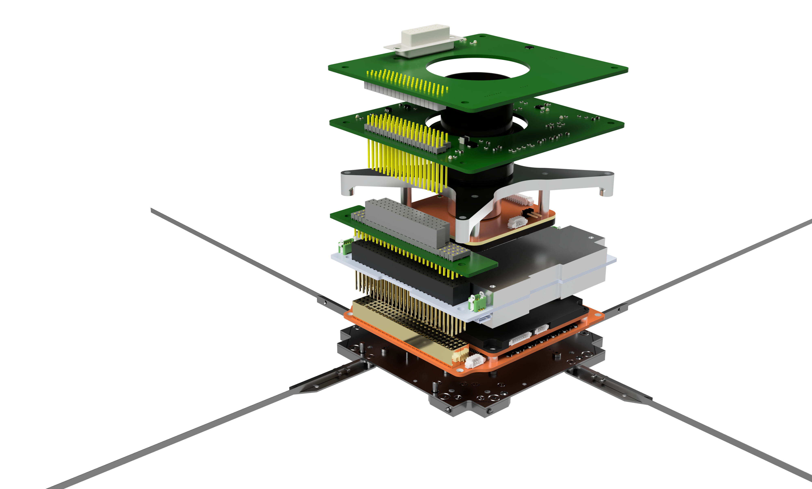

Project Introduction
The Atmospheric Polar Transmission Alignment Satellite (APTAS) is the first student CubeSat developed at Luleå University of Technology (LTU).
The goal of the project is to design, build, test, and operate a 1U CubeSat.
The project also aims to enable future CubeSat projects within the university.
Dimensions: 10 × 10 × 10 cm
Mass: 1 kg
Actuators: Magnetorquer coils
Attitude sensors: Coarse Sun Sensors (CSS), magnetometers, and a MEMS gyroscope
Frequency: 432 to 438 MHz
The Satellite
The satellite subsystems and payload are composed of multiple boards and components stacked and interconnected through a pin stack.

The Umbilical board sits at the top of the satellite stack and provides the primary external interface while on the ground.
It enables connection to ground support equipment as well as access for debugging and testing.
The board also houses the ADCs that digitize the signals from the CSSs.
The EISCAT Calibration Transmitter (ECAT) is the main payload of the satellite.
It generates a stable 233 MHz reference signal that will be used to calibrate the phased array antennas of EISCAT’s next-generation geospace radar, EISCAT 3D.
This board has been developed by students with support from EISCAT.
The CAM is the secondary payload and consists of a commercial off-the-shelf (COTS) CMOS camera and lens.
It will be used to photograph the surface of the Earth.
These images will mainly be used for outreach by LTU.
An intermediate board called the Step-Up board reroutes signals in the main connector stack due to space constraints.
Power is managed by the Electrical Power System (EPS), another COTS component.
It houses the satellite’s batteries, manages charging, and distributes power to the other satellite components.
The transceiver receives and routes telecommands and encodes telemetry.
Communication is handled using the CubeSat Space Protocol (CSP).
The On-Board Software (OBSW) controls most satellite functionality and runs on the On-Board Computer (OBC).
The antenna module is used for transmission of the ECAT signal as well as reception of telecommands and transmission of telemetry.
How do I join?
At the start of each semester, GSO hosts a kickoff event where the projects are presented and students at the Space Campus can sign up for interviews.
This is the primary recruitment channel, but you are also welcome to contact us in person or via email to express your interest in joining.